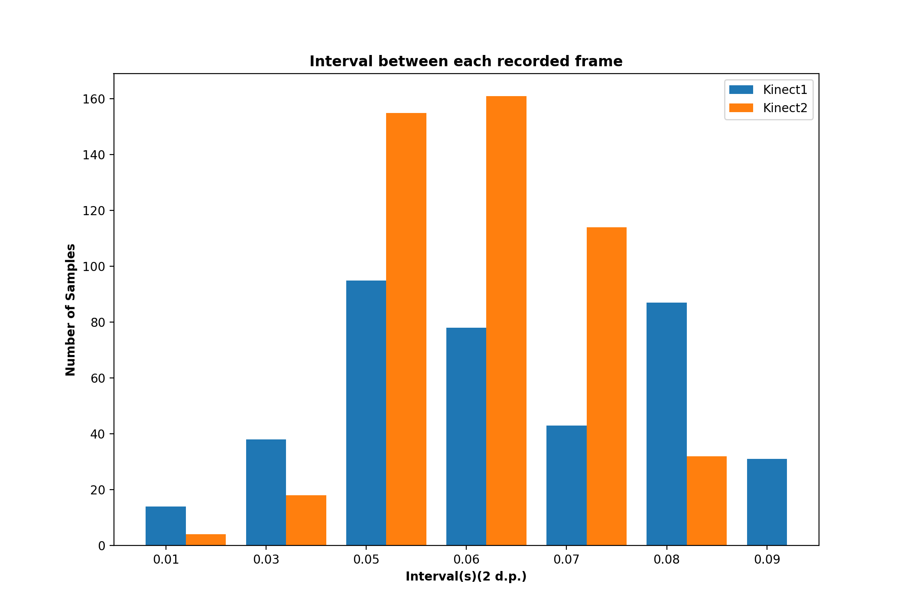
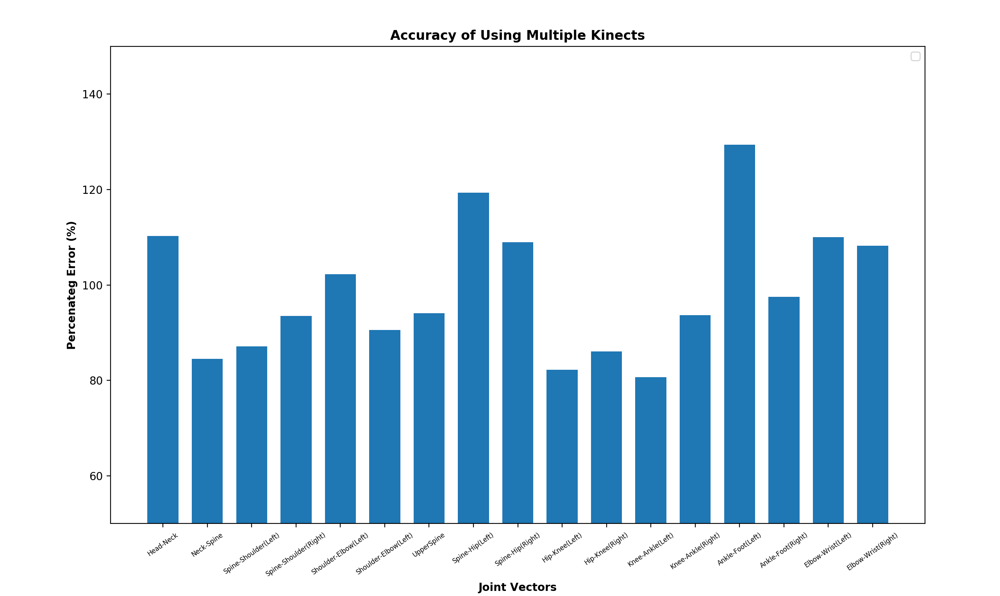
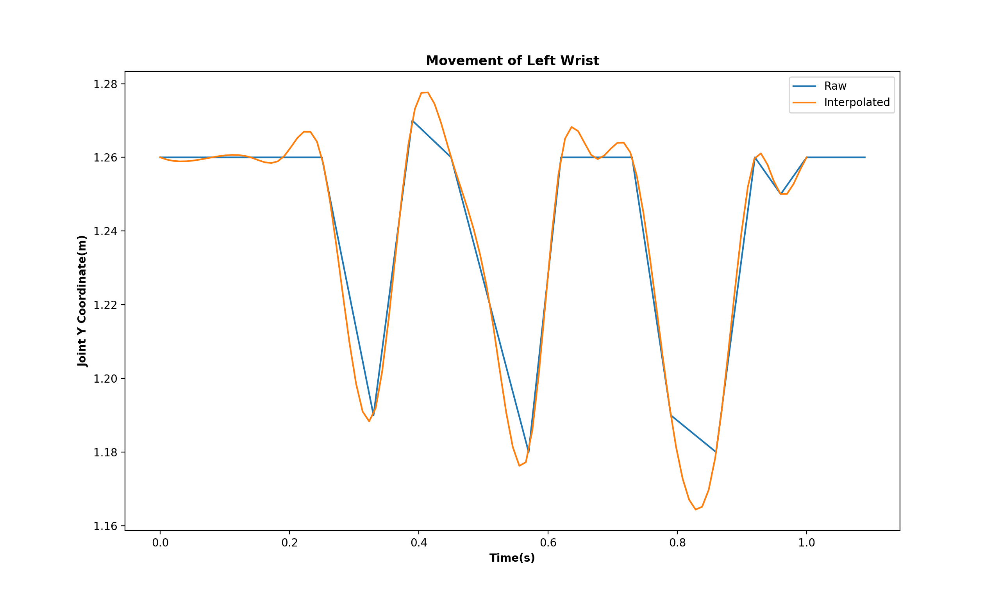
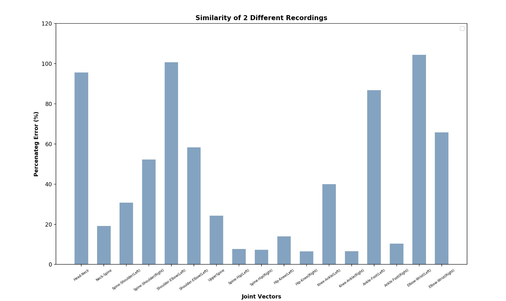

Algorithms
Models
Transformation algorithm between camera coordinates
What is the key idea of this algorithm?
The algorithm to transform the joint coordinates measured by each individual kinect is an important one when it comes to combining the results of each kinect. The joint coordinates from each kinect will be relative to the kinect that recorded the data. This means in order to do any processing or combining of the data, a transformation must be applied to both the x and z coordinate readings of each client kinect (we make the assumption that each kinect will be recording from the same distance off of the ground). The transformation is detailed in the image above, note that x is positive in the left direction of the server camera because that is the convention with the Kinect SDK. The transformation is dependant on where the client cameras are positioned relative to the server kinect, as well as the angle of rotation. Currently we are hard coding those placements (angle, x_distance, z_distance).
The second important algorithm came about because of discrepancies in the recording rate of the Kinects. We found that different Kinects were outputting frame data at different time stamps. This causes issues when trying to merge the skeletal data as you won't be averaging skeletons taken at identical times. See figure 1.
Figure 1. Illustrates an example of the variation in frame data recording rate between 2 opposite kinects, taken from one of our recordings.
The solution to this problem was to interpolate the data files before merging them. By looking at joint positions in consecutive frames, we were able to interpolate the joint positions and therefore standardise the timestamps to 0.01s intervals. This allows accurate merging of skeletons frame by frame. We used both linear interpolation and cubic spline interpolation as recommended to us by our TA, but noticed little difference between the two interpolation methods.
Each kinect would start recording simultaneously and start writing the skeletal data to individual csv text files. The recording is then stopped at the same time and the files are stored in a folder locally. When the recording is played back, the files are merged together using our code. First the appropriate transformations are performed on the files and then the data is combined and written to a new file based on their respective time stamps. If any of the data appears to be recorded at the same time, an average is taken instead. The hard coded x and z distance values for the transformations are estimated by looking at the values of a specific joint from each kinect at the same time stamp. The merged csv is then played back by the software and generated into a skeleton.
A key weakness of the Kinect V2 is that it has only been trained to recognise the human silhouette from front on. This is clearly a problem when dealing with dance; there will inevitably be periods of time where dancers will be side on to the Kinect, leading to it struggling to correctly identify the joint of the human body for skeletal tracking. In theory, this should be an area where having multiple Kinects recording the subject dancer should improve the skeletal tracking of the dance. We decided that by situating the Kinects at the 4 cardinal points around the dancer, that in theory you should always have at least 1 Kinect that is correctly tracking the dancer's skeleton. The problem then ultimately boiled down to how to detect when a Kinect is recording the subject from side on, since in that case the joint data is most likely not very accurate and should be disregarded. We came up with two different methods to try and tackle this problem:
The first was to look at the distance between either the shoulder joints or the hip joints. The idea was that if this distance is too small, it is likely that the subject is not facing the Kinect. The appeal of this method was it's simplicity in implementation
and the low time complexity - A quick check can be done on the joint data frame by frame for each Kinect to calculate this distance, and then we can disregard the data if it is below a set threshold:
for(frame in frames):
if(absolute(shoulderL - shoulderR)):
disregardFrame()
The second was to look at the joint confidence value that is pre-pended to the three tuple of xyz positions for a given joint [25]. The research paper went quite in depth into improving the data from Kinect feeds, but given the time constraints, we decided that simply looking at the joint confidence would be a good way of determining whether the Kinect was recording accurate joint data. A kinect tracks each joint as: 0 - Untracked, 1 - Inferred (from the position of the other joints), 2 - Tracked. Given that we had multiple Kinects and therefore had several skeletons of data to work with, we chose to try disregarding any joint that is not fully tracked, and only averaging the transformed values of joints that had the joint confidence of "2".
We then tried combining the two techniques for merging. We first pre-processed each frame from every Kinect, so that only frames that were deemed to be facing the given Kinect were considered. Then the joint confidence values are looked at so that only joints that are fully tracked in acceptable frames contribute to the averaged skeleton position.
Percentage Error of 'Ideal' and 'Model' Dance
What is the key idea of this algorithm?
This algorithm involves two classes, the 'PositionVectors' class and 'MarginOfError' class. Its aim is to firstly, get the x,y and z coordinates of the 'amateur' and 'model' dance recordings and then generate the relative position vectors of each. For example the relative position vector between the head and neck joint of the 'amatuer' dance file. It then will normalise these position vectors, so they can later be used for comparison. The vectors need to be normalised so there aren't any problems with scaling. The second half of the algorithm then workings out the 'margin of error' or percentage error between the relative position vectors of joints, of the 'ideal' and 'amateur' dance models. It then produces a average percentage area of 6 key areas: Head, Shoulder, Arms, Torso, Hips and Legs. We then also have an overall likeness score, the higher the likeness score the closer to the ideal model the amateur dance was.
To further explain the algorithm, we will take snippets of code from the main project and explain them.
private void createPositionVectorList(string newPath)
{
//0-17 index shows the pairs of points
positionVectorList.Add(getPositionVector(jointsAndCoordinates["Head"], jointsAndCoordinates["Neck"]));
positionVectorList.Add(getPositionVector(jointsAndCoordinates["Neck"], jointsAndCoordinates["SpineShoulder"]));
positionVectorList.Add(getPositionVector(jointsAndCoordinates["SpineShoulder"], jointsAndCoordinates["ShoulderLeft"]));
positionVectorList.Add(getPositionVector(jointsAndCoordinates["SpineShoulder"], jointsAndCoordinates["ShoulderRight"]));
positionVectorList.Add(getPositionVector(jointsAndCoordinates["ShoulderLeft"], jointsAndCoordinates["ElbowLeft"]));
positionVectorList.Add(getPositionVector(jointsAndCoordinates["ShoulderRight"], jointsAndCoordinates["ElbowRight"]));
positionVectorList.Add(getPositionVector(jointsAndCoordinates["SpineMid"], jointsAndCoordinates["SpineBase"]));
positionVectorList.Add(getPositionVector(jointsAndCoordinates["SpineBase"], jointsAndCoordinates["HipLeft"]));
positionVectorList.Add(getPositionVector(jointsAndCoordinates["SpineBase"], jointsAndCoordinates["HipRight"]));
positionVectorList.Add(getPositionVector(jointsAndCoordinates["HipLeft"], jointsAndCoordinates["KneeLeft"]));
positionVectorList.Add(getPositionVector(jointsAndCoordinates["HipRight"], jointsAndCoordinates["KneeRight"]));
positionVectorList.Add(getPositionVector(jointsAndCoordinates["KneeLeft"], jointsAndCoordinates["AnkleLeft"]));
positionVectorList.Add(getPositionVector(jointsAndCoordinates["KneeRight"], jointsAndCoordinates["AnkleRight"]));
positionVectorList.Add(getPositionVector(jointsAndCoordinates["AnkleLeft"], jointsAndCoordinates["FootLeft"]));
positionVectorList.Add(getPositionVector(jointsAndCoordinates["AnkleRight"], jointsAndCoordinates["FootRight"]));
positionVectorList.Add(getPositionVector(jointsAndCoordinates["ElbowLeft"], jointsAndCoordinates["WristLeft"]));
positionVectorList.Add(getPositionVector(jointsAndCoordinates["ElbowRight"], jointsAndCoordinates["WristRight"]));
normalisePositionVectors(newPath);
}
This class visualises the data being manipulated by using a dictionary data type. For example. the first 'positionVectorList.Add' function gets the x, y and z coordinates of the 'Head' and 'Neck' joint, this forms one position vector (by respectively calling the getPositionVector function shown below). The function 'normalisePositionVectors' then goes through the created dictionary and normalises all the position vectos.
private List<'float'> getPositionVector(string firstJoint, string secondJoint)
{
char[] delimeters = { ',' };
float coordOne, coordTwo, difference;
List<.float> positionVectors = new List<.float>();
string[] coOrdsOfFirstJoint = firstJoint.Split(delimeters);
string[] coordsOfSecondJoint = secondJoint.Split(delimeters);
for (int j = 1; j < coOrdsOfFirstJoint.Length; j++)
{
float.TryParse(coOrdsOfFirstJoint[j], NumberStyles.Float, CultureInfo.InvariantCulture, out coordOne);
float.TryParse(coordsOfSecondJoint[j], NumberStyles.Float, CultureInfo.InvariantCulture, out coordTwo);
difference = Math.Abs(coordTwo - coordOne);
positionVectors.Add(difference);
}
return positionVectors;
}
Class iterates through the array of joint containing is coordinates, in the pattern x,y,z,x,y,z (iterated based on time frame) etc. and then works out the absolute difference between the ideal's first head, x-coordinate and the amateur's first head, x-coordinate.
private void normalisePositionVectors(string filePathNormalisedVectors)
{
List<.float> tempNormalisedCoord = new List<.float>();
float length = 0.0000f;
foreach (List<.float> coordinateXYZ in positionVectorList)
{
for (int i = 0; i < coordinateXYZ.Count(); i += 3)
{
length += (float) Math.Sqrt(Math.Pow(Abs(coordinateXYZ[i]),2) + Math.Pow(Abs(coordinateXYZ[i + 1]),2) + Math.Pow(Abs(coordinateXYZ[i + 2]),2));
tempNormalisedCoord.Add((float)Math.Round(((float)coordinateXYZ[i] / length), 4, MidpointRounding.ToEven));
tempNormalisedCoord.Add((float)Math.Round(((float)coordinateXYZ[i + 1] / length), 4, MidpointRounding.ToEven));
tempNormalisedCoord.Add((float)Math.Round(((float)coordinateXYZ[i + 2] / length), 4, MidpointRounding.ToEven));
}
normalisedPositionVectors.Add(tempNormalisedCoord);
length = 0.0000f;
tempNormalisedCoord = new List<.float>();
}
writeToFile(filePathNormalisedVectors, normalisedPositionVectors);
}
'length' gives the normalised value of the relative x,y and z coordinates, it then divides it by each single coordinate to get the normalised value. We then write the normalised vector to a file so our 'MarginOfError' class can make use of the data to then work out the percentage errors.
private float getPercentageError(List<.string> idealValue, List<.string> modelValue)
{
float totalPercentages = 0.0f;
float idealValueFloat = 0.0f;
float modelValueFloat = 0.0f;
float error = 0.0f;
float denominator = 0.0f;
float averagePercentageError = 0.0f;
float numerator = 0.0f;
for (int i = 0; i < idealValue.Count(); i++)
{
float.TryParse(idealValue[i], NumberStyles.Float, CultureInfo.InvariantCulture, out idealValueFloat);
float.TryParse(modelValue[i], NumberStyles.Float, CultureInfo.InvariantCulture, out modelValueFloat);
numerator = idealValueFloat - modelValueFloat;
denominator = (Abs(idealValueFloat) + Abs(modelValueFloat)) / 2;
error = Abs(numerator / denominator) * 100;
if (Double.IsNaN(error))
{
error = Abs(modelValueFloat) * 100;
}
totalPercentages += error;
}
averagePercentageError = (float)totalPercentages / idealValue.Count();
return averagePercentageError;
}
This function within the MarginOfError class produces the percentage error of two string values after they've been read from our normalised vector textfile.
Figure 4 shows the percentage error algorithm at work, it shows the comparison between a dance where the user is relatively in the same position but in the 'ideal' dance is moving only their left hand, and in the 'model' dance is moving both ther left and right hands. Hence the greatest variation seen is in the section elbow-wrist and shoulder right.
Experiment Results
Investigation of optional hyper parameters, experiment results presented by quantified values, plots/tables to show performance of comparison results
Figure 2. Depicts the percentage error from a recording between two kinects when one has been transformed.
Figure 3. Comparing the difference in the movement of a specific joint between a recording with raw data and one that has been interpolated using a smooth step function.
Figure 4. The results of using the comparison algorithm on an ideal and amateur recording for a certain movement
Discussions
Why algorithm fails for some test examples? Suggestions to improve the performance?
Accurate merging proved to be quite difficult to achieve with the Kinect v2. Firstly we had to ensure that the measurements of all the distances during a recording was as accurate as possible, which was quite hard because we were not able to get stands for the Kinect. In addition, a lot of issues arose from the inaccuracies of the Kinect hardware themselves. Even though our math for merging was correct, each Kinect could not track the coordinates entirely accurately and merging two or more Kinects would often add in more error. Therefore we can see from figure 2 that there appears to be a substantial amount of percentage error when comparing a Kinect with another transformed one. On the other hand, from a visual perspective the original skeleton and transformed one look reasonably similar so even though this percentage error seems high, the movements may not be exact but they are in fact not far off at all. Thid difference should be negligible in cases where pin-point accuracy is not necessary. In the future, we would probably look to program a way to calculate the distances between the Kinect’s while recording so that it does not have to be manually done and hardcoded. We would also look for newer alternative hardware to seek improvement in the precision.
Interpolation seemed to work well - the majority of the merged recordings looked significantly smoother than before. Figure 3 shows that by using a smooth step interpolation, the movement followed a much softer trajectory between each frame. Since raw recordings pick up the coordinates at random intervals, this can lead to sharp changes in direction, which is demonstrated on the graph. This could often be seen when played back where some movements appeared to be too rigid. Using interpolation allows for a more gradual change in the movement, resulting in a model that is more human-like and natural. However, there does seem to be issues when a person performs any extremely rapid motions because the pattern becomes too hard to follow and our program could end up interpolating unrealistic values. To improve this, we could consider increasing the interval time between each interpolation so that there is a better balance between raw and interpolated data; overusing estimation can easily lead to higher inaccuracy.